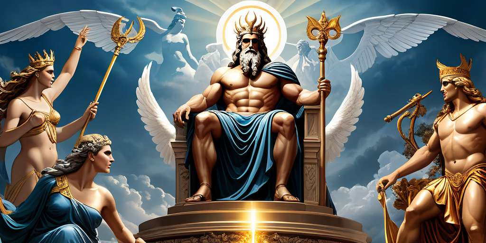

Los mitos y leyendas griegas tuvieron su origen en Creta, durante la llamada época minoica. Sus habitantes
mantenían creencias en las que las fuerzas naturales y ciertos objetos estaban dotados de poderes sobrenaturales. Este
hecho dio como resultado el surgimiento de las primeras leyendas.
La mitología griega se divide en tres grandes periodos:
Dioses: engloba todas las historias sobre la forma en la que se creó el mundo, prestando especial atención al surgimiento de
los seres humanos y de los primeros dioses. Cuenta cómo surgió la Tierra como fruto de la unión de Eros (fuerza vital del
amor) con tártaro (el mundo espectral).
Dioses y humanos: en la segunda etapa, dioses, semidioses y humanos protagonizaron hazañas y dramas.
Heroica: recoge historias sobre humanos y semidioses, como la Guerra de Troya. Todos los registros literarios enaltecen las
hazañas de los humanos, y los grandes dioses pierden protagonismo.
Más información, da click en la imagen:
| Heracles | Es probablemente uno de los semidioses más aclamados. Este ser mitológico es también conocido como Hércules por los romanos, y nació como resultado de la unión entre Zeus y Alcmena. |
|---|---|
| Dionisio | Dionisio es el hijo de Zeus y Sémele. Es conocido como uno de los dioses del Olimpo, ya que acabó convirtiéndose en uno. Sin embargo, el dios del vino es en realidad hijo de una mortal. |
| Perseo | Hijo de Zeus y de la mortal Dánae, sus hazañas forman parte de algunos de los mitos más interesantes de toda la mitología. Se le atribuye haber fundado la ciudad de Micenas, una de las más importantes de la Antigua Grecia. También tiene un protagonismo clave en mitos, matando a la poderosa Medusa. |
Pan |
El semidiós Pan representa la sexualidad masculina, la vigorosidad y la fertilidad. Se desconoce cuál es su origen exactamente, aunque todo apunta a que era hijo de Zeus y una mortal. |
| Helena | Helena era una semidiosa muy admirada por su belleza. Era hija del dios Zeus y de Leda. Fue raptada por Paris, lo cual causó la guerra de Troya, uno de los eventos más conocidos de la mitología griega. |
| Orfeo | El semidiós Orfeo es hijo del dios Apolo y de Calíope, la musa de la poesía. Siendo hijo del dios de la música y de la musa de la poesía, sus habilidades musicales eran impresionantes. Estas se mencionan en la mitología cuando usa su lira para dormir al Cancerbero, el perro de tres cabezas que gobernaba el inframundo. |